June 1, 2026
Project Sections
1. Motivation: From Circuit Models to EM Simulation
In the previous article, I built a small transmission-line playground in ADS to explore how RF transmission lines behave in a controlled schematic environment. That project focused on the core ideas: reflections, matched and mismatched loads, line length, phase rotation, Smith chart behavior, and basic microstrip parameter sweeps.
That workflow is useful because it isolates the transmission-line concepts from the physical layout details. Using ideal transmission lines and ADS microstrip models makes it easy to see how impedance, electrical length, load mismatch, S11, S21, and the impedance seen at the input relate to each other.
However, a real PCB trace is not just an abstract transmission line. It is a physical copper structure placed over a dielectric substrate and ground plane. The fields are distributed partly in the dielectric and partly in air, the trace has finite thickness, the substrate has loss, and the port definition itself can affect the extracted result. At some point, the simplified schematic model is no longer enough.
The goal of this project is to take the next step: design a nominal 50 Ω microstrip line, then validate it using full-wave electromagnetic simulation. I start from analytical microstrip equations and ADS LineCalc, build a schematic-level ADS baseline, and then compare that result against EM simulations in ADS Momentum and Ansys HFSS.
The purpose is not only to get a 50 Ω line. The more important goal is to understand how the different modeling levels compare:
- closed-form equations
- ADS LineCalc synthesis
- ADS schematic microstrip models
- ADS Momentum planar EM simulation
- HFSS 3D full-wave simulation
By comparing these approaches on the same structure, this project shows where the simple models are reliable, where they begin to diverge, and what practical details matter when moving from theory to PCB implementation.
2. Design Target and Substrate Definition
Before comparing analytical models and EM solvers, the first step is to define one physical microstrip structure that will be used consistently throughout the project.
For this article, the design target is a nominal 50 Ω microstrip transmission line on a simple two-layer PCB stackup. The structure is intentionally kept simple: a copper trace on the top layer, a continuous ground plane on the bottom layer, and an FR-4 dielectric substrate between them.
The goal is not to design a production-ready RF board, but to create a controlled test case that can be analyzed using several levels of modeling.
| Parameter | Value |
|---|---|
| Target impedance | 50 Ω |
| Substrate material | FR-4 |
| Relative permittivity, εr | 4.3 |
| Substrate height, h | 1.6 mm |
| Copper thickness, t | 35 µm |
| Loss tangent, tanδ | 0.02 |
| Conductor | Copper |
| Line length | 50 mm |
| Frequency sweep | 100 MHz to 6 GHz |
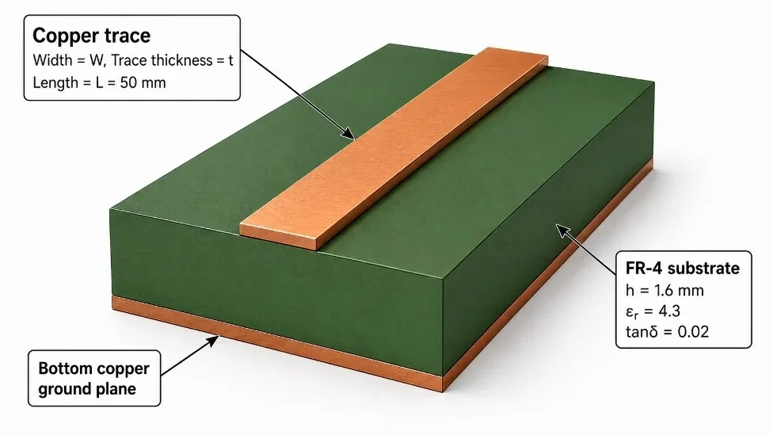
A 50 mm line length is long enough to show meaningful phase delay across the frequency sweep, while still being simple to model in both ADS Momentum and HFSS. Since the purpose of this article is model validation rather than matching-network design, a fixed physical length is more useful than designing the line to be a specific fraction of a wavelength at one frequency.
FR-4 is used here because it is common, inexpensive, and familiar from typical PCB fabrication. However, it is also not an ideal RF substrate. Its dielectric constant and loss tangent are not perfectly controlled, and both may vary with frequency, manufacturer, resin content, and glass weave. This makes it a useful example: simple enough for a first EM validation project, but realistic enough to show why physical modeling matters.
The baseline geometry is therefore:
A copper thickness of t = 35 µm was used, corresponding to standard 1 oz PCB copper. The remaining unknown is the trace width, W, required to achieve approximately 50 Ω. That value is first estimated analytically, then calculated using ADS LineCalc, and finally validated using schematic and EM simulations.
3. Analytical Microstrip Estimate
Before using ADS LineCalc or an EM solver, I first estimated the required microstrip width using standard closed-form microstrip equations. This gives a useful reference point and helps verify that the software-generated dimensions are reasonable.
For a microstrip line, the characteristic impedance is mainly controlled by the ratio between the trace width and substrate height:
where W is the trace width and h is the substrate height. The dielectric constant also affects the result because the electromagnetic fields are partly inside the substrate and partly in air. For this reason, microstrip lines are usually described using an effective dielectric constant, εeff, rather than only the substrate dielectric constant εr.
For the baseline stackup:
Ignoring copper thickness for the first estimate, the effective dielectric constant for Wh > 1 can be approximated as:
The corresponding characteristic impedance approximation is:
While closed-form synthesis approximations exist for estimating the required microstrip width, I chose to solve the equations numerically using a short Python script. The script sweeps the trace width W, calculates the corresponding characteristic impedance Z0, and extracts the width closest to the 50 Ω target from the resulting curve.
The code used for the sweep is shown below:
import numpy as np
import matplotlib.pyplot as plt
# Baseline substrate parameters
er = 4.3
h = 1.6e-3 # substrate height [m]
z0_target = 50 # target impedance [Ω]
def microstrip_z0(W, h, er):
"""First-order microstrip impedance approximation."""
wh = W / h
eps_eff = (er + 1) / 2 + ((er - 1) / 2) / np.sqrt(1 + 12 / wh)
if wh <= 1:
z0 = (60 / np.sqrt(eps_eff)) * np.log(8 / wh + wh / 4)
else:
z0 = (120 * np.pi) / (
np.sqrt(eps_eff) *
(wh + 1.393 + 0.667 * np.log(wh + 1.444))
)
return z0, eps_eff
# Sweep width from 0.1 mm to 8 mm
widths = np.linspace(0.1e-3, 8e-3, 10000)
z0_values = np.array([microstrip_z0(W, h, er)[0] for W in widths])
best_index = np.argmin(np.abs(z0_values - z0_target))
best_W = widths[best_index]
best_z0, best_eps_eff = microstrip_z0(best_W, h, er)
print(f"Best width: {best_W * 1e3:.3f} mm")
print(f"Calculated Z0: {best_z0:.2f} Ω")
print(f"Effective dielectric constant: {best_eps_eff:.3f}")
print(f"W/h ratio: {best_W / h:.3f}")
plt.figure(figsize=(8, 5))
plt.plot(widths * 1e3, z0_values, color="red", label="Z0 vs trace width")
plt.axhline(z0_target, color="black", linestyle="--", label="Target: 50 Ω")
plt.scatter(best_W * 1e3, best_z0, color="green", edgecolor="black", linewidth=1.5, s=80, zorder=5)
plt.annotate(
f"W = {best_W * 1e3:.2f} mm\nZ0 = {best_z0:.2f} Ω",
xy=(best_W * 1e3, best_z0),
xytext=(best_W * 1e3 + 0.5, best_z0 + 10),
arrowprops=dict(arrowstyle="->", color="black")
)
plt.xlabel("Trace width W [mm]")
plt.ylabel("Characteristic impedance Z0 [Ω]")
plt.title("Analytical Microstrip Impedance Estimate")
plt.grid(True)
plt.legend()
plt.tight_layout()
plt.show()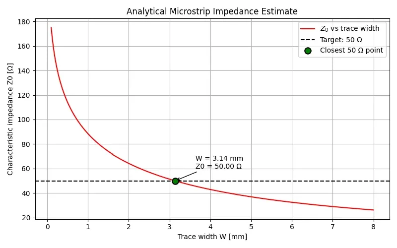
From this first-order calculation, the closest width to a 50 Ω line is approximately W ≈ 3.14 mm. This value is used as the initial estimate before checking the result with ADS LineCalc and later with EM simulation.
4. ADS LineCalc and MLIN Baseline
After estimating the trace width numerically, the next step was to check the result using ADS LineCalc. LineCalc provides a practical synthesis tool for transmission-line structures, allowing the physical geometry to be calculated from a target impedance and substrate definition.
Using the same baseline stackup as before — εr = 4.3, h = 1.6 mm, t = 35 µm, and tanδ = 0.02 — the goal was to synthesize a microstrip line with Z0 = 50 Ω.
The analytical Python estimate gave a trace width of approximately W ≈ 3.1 mm. LineCalc was then used as an independent ADS-based check of this value. Since LineCalc includes a more complete microstrip model than the simplified hand equations used in the first estimate, a small difference between the two results is expected.
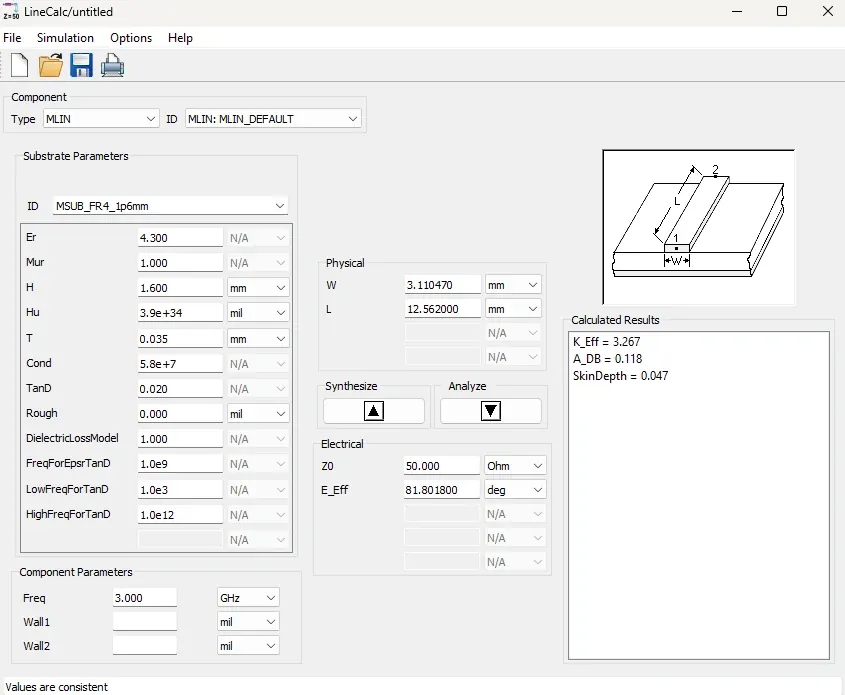
LineCalc was evaluated at 3 GHz, the center of the intended 0.1–6 GHz simulation range. Since the goal at this stage was to synthesize the trace width rather than define a specific electrical length, only the calculated width was used in the following simulations.
ADS LineCalc synthesized a trace width of W = 3.11047 mm, which is very close to the numerical Python estimate of approximately 3.1 mm. The LineCalc-generated length was not used, since the project uses a fixed physical line length of L = 50 mm for the comparison between schematic and EM simulations.
After synthesizing the line in LineCalc, the resulting dimensions were used to build a schematic-level ADS model using an MSUB substrate definition and an MLIN microstrip transmission-line element. This provides a baseline ADS circuit simulation before moving into EM simulation.
At this stage, the structure is still not a drawn PCB layout. It is a circuit-level microstrip model. However, unlike an ideal TLIN, the MLIN element includes substrate-dependent behavior, making it a useful intermediate step between closed-form equations and full-wave EM.
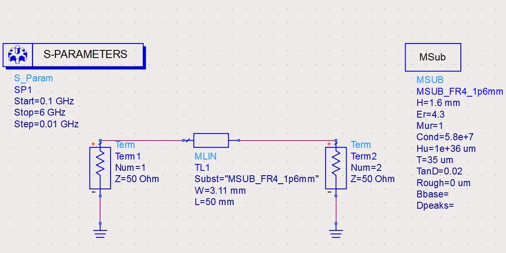
The baseline ADS simulation was then used to observe the expected S-parameter behavior of a 50 Ω microstrip line terminated in 50 Ω ports. Since the line is designed to match the port impedance, the return loss should remain low across the sweep, while S21 should mainly show insertion loss and phase delay caused by propagation along the 50 mm line.
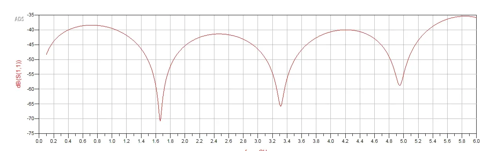
The ADS MLIN baseline shows a low but frequency-dependent S11, with periodic minima caused by the finite electrical length of the line. Although the line is nominally 50 Ω, the microstrip model is not perfectly identical to the 50 Ω port reference impedance across the full sweep, so a small residual mismatch remains. The return loss remains better than approximately 35 dB across the simulated range, indicating that the LineCalc-derived width provides a very good schematic-level match.
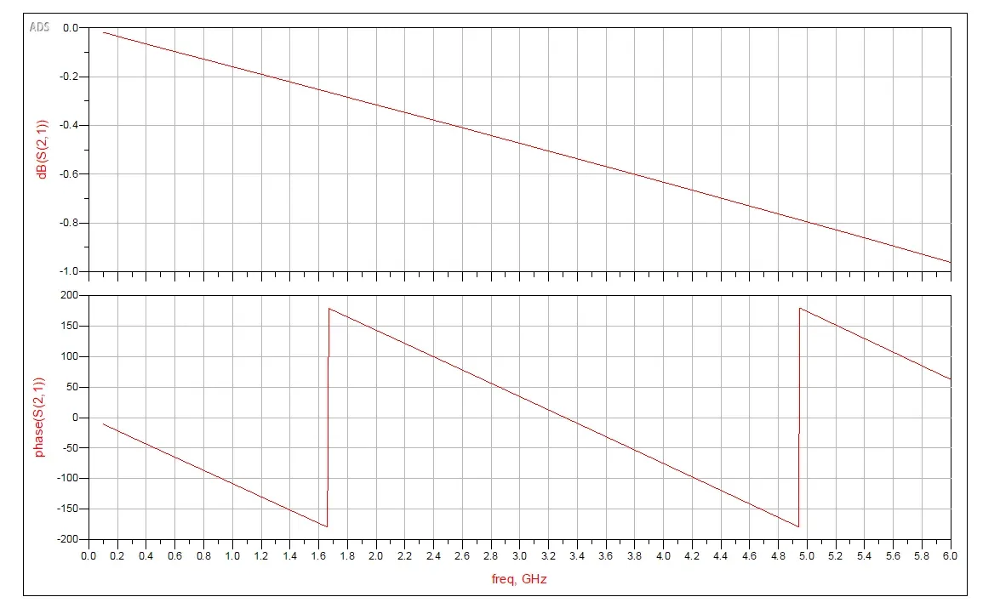
The S21 magnitude remains close to 0 dB at low frequency and gradually decreases with frequency due to dielectric and conductor losses. The S21 phase is approximately linear with frequency, as expected for a fixed-length transmission line. The discontinuities in the plotted phase are phase wrapping at ±180°, not physical discontinuities in the line behavior.
This gives the first software baseline for the project:
The next sections compare this circuit-level result against ADS Momentum and HFSS EM simulations of the physical structure.
5. ADS Momentum EM Simulation
After building the ADS schematic-level MLIN baseline, the next step was to simulate the same microstrip line as a physical layout using ADS Momentum.
In the previous section, the microstrip was represented by an MLIN element. That model uses parameters such as width, length, substrate height, dielectric constant, copper thickness, and loss tangent, but the line is still treated as a predefined transmission-line component inside a schematic simulation.
Momentum uses a different modeling approach. Instead of simulating a symbolic microstrip component, the copper trace is drawn as an actual layout shape, the substrate stackup is defined in the Momentum substrate editor, and the solver calculates the electromagnetic behavior of that physical geometry.
This means that Momentum can capture effects related to the actual planar structure, such as current distribution across the finite-width trace, fringing fields at the trace edges, conductor loss, dielectric loss, port discontinuities, and sensitivity to mesh and layout setup. For a simple straight microstrip line, the Momentum result should follow the same general behavior as the MLIN schematic result, but the two are not expected to be numerically identical.
The simulated Momentum structure uses the same baseline dimensions:
A practical detail in this setup is that the ADS layout technology used for this Momentum layout is based on micron layout units. Therefore, the physical line dimensions were entered as L = 50000 µm and W = 3110 µm. These values correspond to the intended physical dimensions of L = 50 mm and W = 3.11 mm.
This unit conversion is important. If the values 50 and 3.11 were entered directly into a micron-based layout, the resulting structure would be 50 µm long instead of 50 mm, producing a completely different EM result.
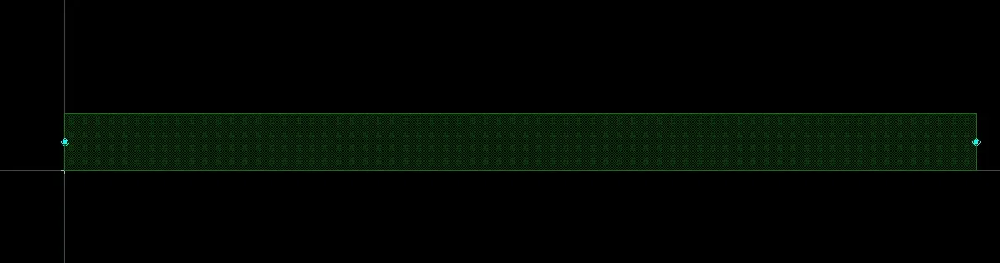
The Momentum substrate was defined independently from the schematic MSUB block. Since this layout was drawn manually, the schematic substrate definition does not automatically apply to the EM layout. The substrate stackup was therefore configured directly in the Momentum substrate editor.
The final Momentum model consists of a rectangular copper trace on the top conductor layer, an FR-4 dielectric layer, and a bottom ground plane. The ports were placed at both ends of the trace and referenced to the ground plane through the Momentum substrate definition.
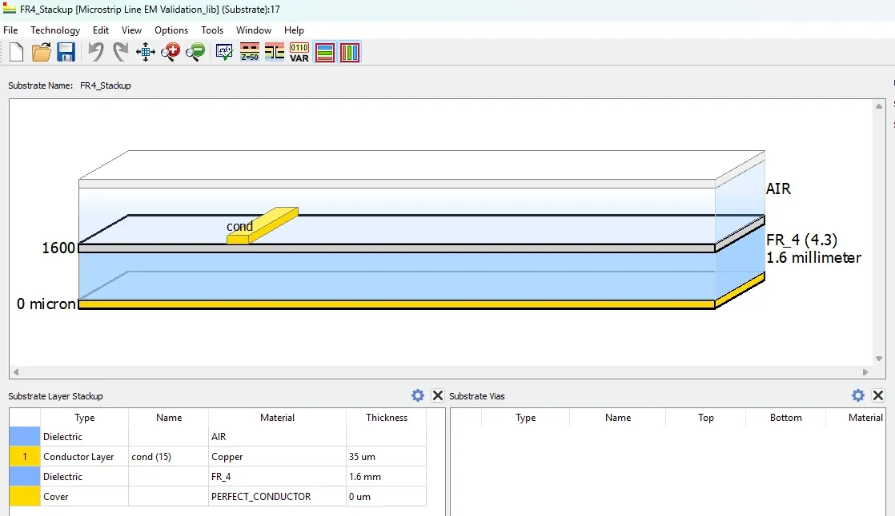
The simulation was performed over the same frequency range used for the ADS schematic baseline:
The expected result is a well-matched line with low S11, insertion loss that increases with frequency, and an approximately linear S21 phase response with normal ±180° phase wrapping.
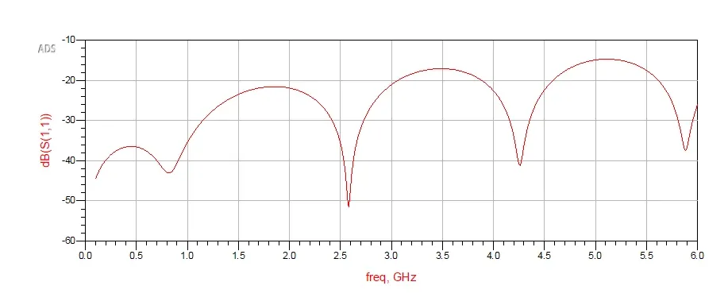
The Momentum S11 result is higher than the schematic MLIN baseline, but still remains well below 0 dB across the frequency sweep. This difference is expected because Momentum simulates the physical layout and port geometry rather than an idealized transmission-line element. The periodic peaks and nulls are caused by the finite electrical length of the line and the small residual mismatch between the EM structure and the 50 Ω port reference.
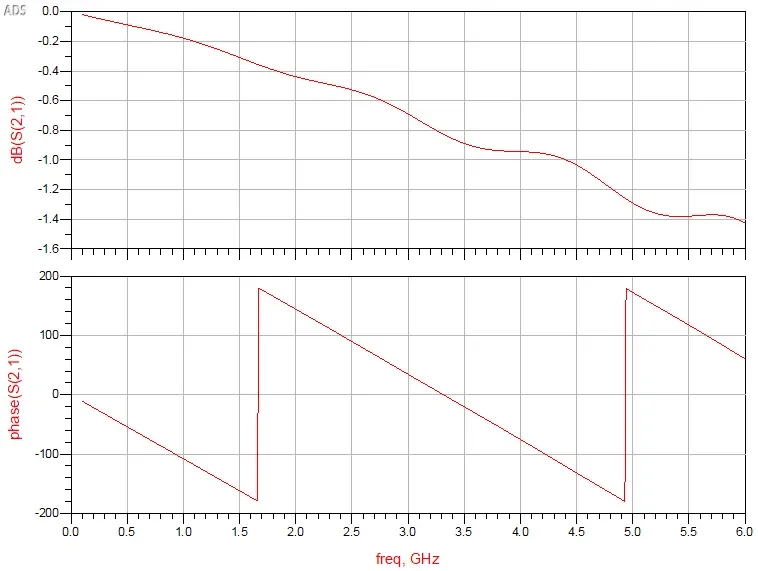
The S21 phase response is approximately linear with frequency, with discontinuities caused by phase wrapping at ±180°. This confirms that the EM layout represents the intended 50 mm line length. During setup, this phase behavior was also useful as a sanity check: an accidentally micron-scale line would show very little phase shift across the same frequency range.
Overall, the Momentum simulation follows the same general trend as the ADS MLIN baseline, but with more visible layout-dependent effects. This is the expected result, since Momentum is solving the drawn physical structure rather than a predefined schematic transmission-line element.
6. HFSS 3D EM Simulation
After validating the physical layout in ADS Momentum, I recreated the same microstrip line in Ansys HFSS as a 3D full-wave EM model.
This provides another level of validation beyond both the ADS schematic simulation and the Momentum planar EM simulation. In the ADS MLIN schematic, the microstrip is represented as a parameterized transmission-line element. In ADS Momentum, the line is drawn as a planar metal shape on a substrate stackup. In HFSS, the structure is built as explicit 3D geometry: the substrate, copper trace, bottom ground plane, surrounding air region, and excitation ports are all separate modeled objects.
The same baseline dimensions were used:
The line was modeled with the x-axis as the propagation direction, the y-axis as the trace-width direction, and the z-axis as the vertical stackup direction. The FR-4 substrate was modeled as a 50 mm long, 20 mm wide, 1.6 mm thick dielectric block. The copper trace was placed on top of the substrate, and a copper ground plane was placed underneath it.
The HFSS geometry used the following dimensions:
| Object | Position (X, Y, Z) | Size (XSize, YSize, ZSize) | Material |
|---|---|---|---|
| FR-4 substrate | (0, -10, 0) mm | (50, 20, 1.6) mm | FR-4 |
| Bottom ground plane | (0, -10, -0.035) mm | (50, 20, 0.035) mm | Copper |
| Top microstrip trace | (0, -1.555, 1.6) mm | (50, 3.11, 0.035) mm | Copper |
| Air box | (-5, -20, -2.035) mm | (60, 40, 13.635) mm | Air |
The air box surrounds the structure and was assigned a radiation boundary. This allows the fields around the microstrip to exist in the simulation volume without forcing the structure into a closed conducting box.
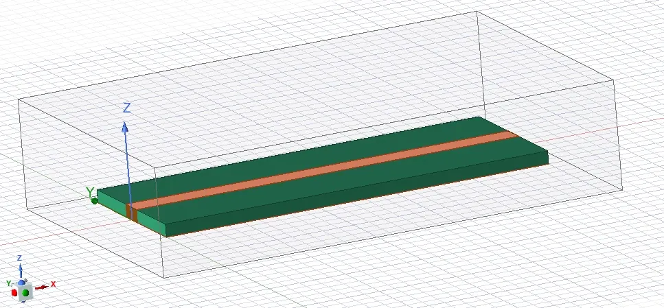
Port setup
For this HFSS model, I used lumped ports at both ends of the microstrip line. Each lumped port was drawn as a vertical sheet between the signal trace and the ground plane.
This is different from a wave port, which usually requires a larger cross-sectional sheet that includes the surrounding field region. A lumped port is more compact and easier to visualize for this simple validation model. It represents a voltage excitation between two conductors: the microstrip trace and the ground reference.
| Port | Plane | Position | Size |
|---|---|---|---|
| Port 1 | YZ | x = 0 mm | 3.11 mm × 1.6 mm |
| Port 2 | YZ | x = 50 mm | 3.11 mm × 1.6 mm |
Each port sheet spans y = -1.555 mm to +1.555 mm and z = 0 mm to 1.6 mm. The integration line was defined from the signal trace to the ground plane. This tells HFSS that the port voltage is measured between the top trace and the ground reference, similar to how a coaxial connector or VNA port would excite a microstrip line.
For Port 1, the integration line was defined from (0, 0, 1.6 mm) to (0, 0, 0). For Port 2, it was defined from (50 mm, 0, 1.6 mm) to (50 mm, 0, 0).
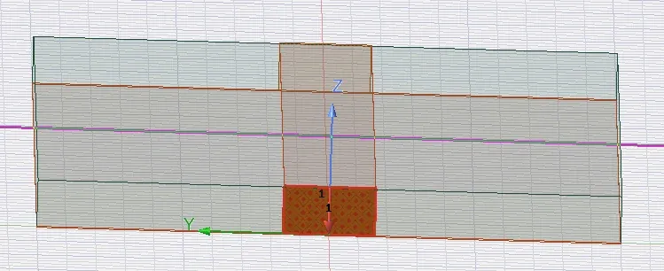
HFSS simulation setup
The HFSS simulation was configured as a driven modal solution. The adaptive solution frequency was set near the upper end of the band, and the final frequency sweep covered the same range used in the ADS simulations:
The main extracted quantities were dB(S11), dB(S21), and phase(S21). This keeps the HFSS results directly comparable to the ADS MLIN and Momentum simulations.
HFSS S11 result
The HFSS S11 result shows that the 3D microstrip model remains well matched across the simulated frequency range. The return loss stays roughly between -21 dB and -45 dB.
This is a good result for the full 3D model. It is not identical to the ADS MLIN or Momentum results, but that is expected. HFSS includes the explicit 3D geometry, finite substrate and ground plane size, lumped-port definition, radiation boundary, and adaptive mesh. These details can shift the exact reflection response compared with the more idealized schematic model.
The periodic shape of the S11 curve is also expected. A small residual mismatch exists between the physical structure and the 50 Ω port reference. Since the line has finite electrical length, the reflected wave rotates with frequency, producing peaks and dips in the return loss.
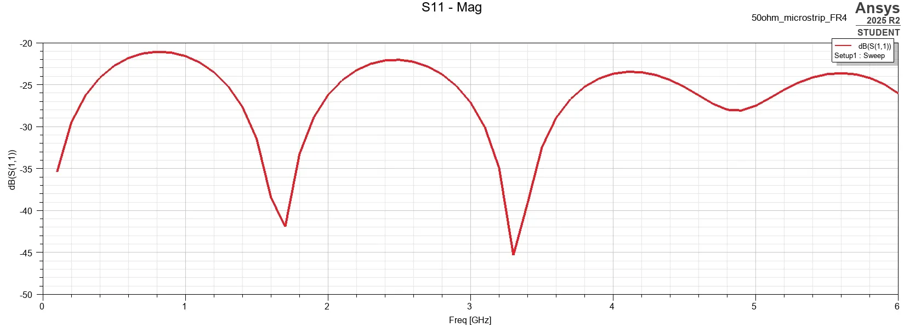
HFSS S21 magnitude result
The HFSS S21 magnitude follows the expected behavior of a lossy microstrip transmission line. At low frequency, the transmission is close to 0 dB. As frequency increases, the insertion loss gradually increases.
At 6 GHz, the simulated insertion loss is approximately S21 ≈ -1.15 dB. This is physically reasonable for a 50 mm FR-4 microstrip line over this frequency range. The loss comes mainly from the dielectric loss of the FR-4 and the finite conductivity of the copper conductors.
The HFSS result is also in the same general range as the ADS Momentum result, which reached roughly -1.4 dB at 6 GHz. The difference is acceptable because the two solvers use different modeling approaches, port definitions, boundary conditions, and meshing strategies.
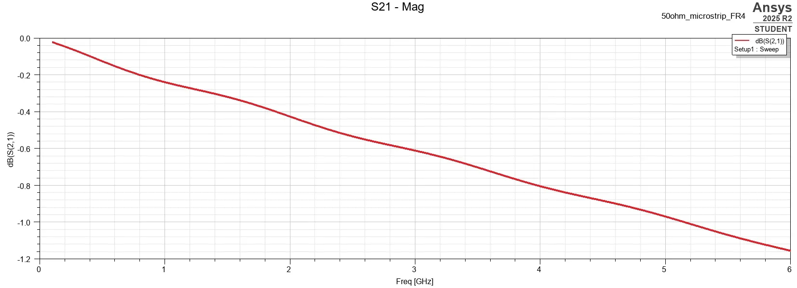
HFSS S21 phase result
The S21 phase response is approximately linear with frequency, with normal phase wrapping at ±180°. This is exactly what is expected from a fixed-length transmission line. As frequency increases, the 50 mm line becomes electrically longer, so the phase delay increases. When the displayed phase crosses the plot boundary, it wraps back around.
This phase plot is also a useful sanity check. If the HFSS model had accidentally been built with the wrong physical length, the phase delay would not match the expected finite-line behavior.
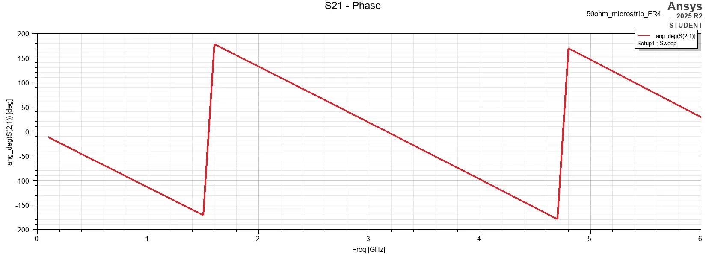
Section summary
The HFSS simulation successfully reproduced the expected behavior of the 50 mm microstrip line in a full 3D EM environment. The return loss remained low across the simulated range, the insertion loss increased with frequency, and the phase response showed the expected delay and wrapping of a finite-length line.
Compared with ADS MLIN, the HFSS model is less idealized because it includes the actual 3D geometry, finite substrate and ground plane, explicit port sheets, air region, radiation boundary, and adaptive meshing. Compared with ADS Momentum, HFSS provides an independent full-wave validation using a different solver approach and a fully modeled 3D structure.
This makes HFSS a useful final validation step before comparing all methods together. At this point, the project has moved through the full modeling chain:
7. Comparison Between Models
At this point, the same nominal 50 Ω microstrip line has been evaluated using several modeling approaches:
Each step uses the same target structure, but each model represents the microstrip differently. The goal of this comparison is not to make every curve identical. Instead, the goal is to understand how the results change as the model moves from a closed-form estimate to a circuit-level transmission-line model, then to planar EM and full 3D EM simulation.
The final physical dimensions used for the simulations were W = 3.11 mm and L = 50 mm, with the baseline substrate definition εr = 4.3, h = 1.6 mm, t = 35 µm, and tanδ = 0.02.
The analytical Python estimate and ADS LineCalc synthesis agreed closely. The Python calculation estimated a width of approximately W ≈ 3.1 mm, while ADS LineCalc returned W = 3.11047 mm. This agreement gave confidence that the selected width was a reasonable starting point before moving into schematic and EM simulations.
Modeling-level comparison
| Method | Role in the workflow | Geometry representation | Main output |
|---|---|---|---|
| Analytical/Python estimate | First-order width estimate | Closed-form microstrip equations | W ≈ 3.1 mm |
| ADS LineCalc | ADS synthesis check | Microstrip synthesis model | W = 3.11047 mm |
| ADS MLIN | Schematic baseline | Parameterized transmission-line element | Low S11, lossy S21, phase delay |
| ADS Momentum | Planar EM validation | Drawn metal layout on substrate stackup | Layout-dependent EM result |
| HFSS | 3D full-wave validation | Explicit 3D geometry | Independent 3D EM result |
This comparison shows the progression from fast analytical and schematic models toward more physical EM simulations.
S11 comparison
The S11 comparison shows the clearest difference between the schematic and EM models.
The ADS MLIN result gives the most ideal-looking match. This is expected because MLIN is a schematic transmission-line element connected directly to ideal 50 Ω terminations. It models the microstrip behavior from the substrate and line parameters, but it does not include the same physical port discontinuities, finite layout details, or boundary effects that appear in the EM solvers.
ADS Momentum and HFSS both show higher residual reflection, but still maintain a good match overall. This is also expected. Momentum simulates a drawn planar layout, while HFSS simulates explicit 3D geometry with lumped ports, finite substrate and ground plane dimensions, an air box, radiation boundary, and adaptive meshing.
The important conclusion is that all three simulations agree on the main point: the W = 3.11 mm trace is a reasonable 50 Ω microstrip for the selected stackup. The differences in the exact return-loss curve are not a contradiction; they show the additional physical details introduced by the EM models.
All models show a usable 50 Ω match, but the EM simulations reveal non-ideal effects that are not visible in the schematic transmission-line model.
S21 magnitude comparison
The S21 magnitude comparison shows better agreement in overall trend.
All three models show the same basic behavior: the line is close to 0 dB at low frequency, then becomes increasingly lossy as frequency increases. This is the expected behavior for a 50 mm FR-4 microstrip line, where dielectric and conductor losses become more significant at higher frequency.
The ADS MLIN result is the least lossy by 6 GHz, while the Momentum result is the most lossy. The HFSS result lands between the two EM/circuit-level results. This ordering is reasonable because each solver uses a different modeling approach and different assumptions for the conductor, dielectric, ports, boundaries, and mesh.
At 6 GHz, the final results are approximately in the same practical range: MLIN ≈ -1.0 dB, Momentum ≈ -1.4 dB, and HFSS ≈ -1.15 dB. The exact values are not identical, but the agreement in trend is strong. The result supports the main expectation: the physical line is well matched, but FR-4 loss becomes significant over 50 mm as frequency approaches several GHz.
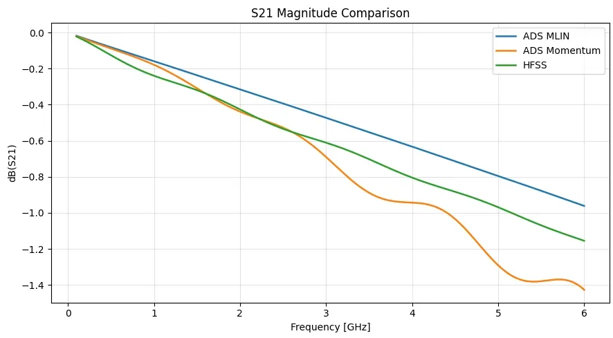
The three models agree on the main behavior: the 50 mm FR-4 microstrip becomes increasingly lossy as frequency increases.
S21 phase comparison
The S21 phase comparison confirms that all three models represent the same finite-length transmission line.
In each result, the phase changes approximately linearly with frequency and wraps at ±180°. This is the expected response of a fixed physical length. As frequency increases, the line becomes electrically longer, so the phase delay increases. Once the displayed phase crosses the plot boundary, it wraps back around.
The ADS MLIN and Momentum phase curves are very close, while HFSS shows a slight phase offset. This difference can come from solver-specific effective permittivity, port reference planes, lumped-port implementation, finite substrate dimensions, or mesh and boundary setup. The important point is that all three curves show the same finite-line behavior.
The phase plot was also useful as a sanity check during the EM setup. A line accidentally drawn at micron scale instead of millimeter scale would show very little phase shift across the same frequency range. The multiple phase wraps confirm that the simulations represent the intended 50 mm line.
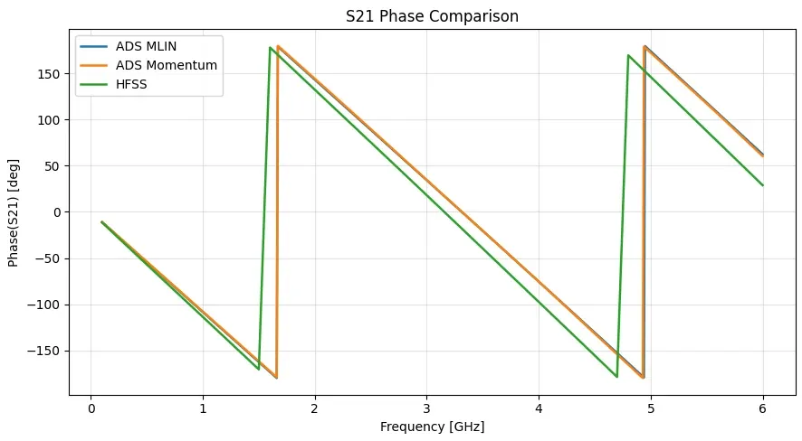
The phase comparison confirms that all three models represent the intended 50 mm electrical path, with small solver-dependent phase differences.
Why the models differ
The differences between the curves come from the assumptions and physical details included at each modeling level.
The analytical equations are first-order approximations. They are useful for estimating the trace width, but they do not simulate finite layout geometry, ports, losses in detail, boundaries, or meshing.
ADS LineCalc improves on the hand estimate by using ADS transmission-line synthesis models, but it is still a design/synthesis tool rather than a full physical EM simulation.
ADS MLIN is a schematic-level microstrip model. It includes substrate-dependent transmission-line behavior, but the line is still represented as a circuit element connected to ideal ports.
ADS Momentum solves the drawn planar layout. It includes the actual metal shape, substrate stackup, conductor and dielectric definitions, port setup, current distribution, and edge/fringing effects in a planar EM formulation.
HFSS solves the structure as explicit 3D geometry. It includes the substrate block, copper trace, finite ground plane, air region, radiation boundary, lumped ports, and adaptive 3D meshing.
So the modeling progression can be summarized as:
or:
The point is not that one result is “correct” and the others are “wrong.” Each model answers the problem at a different level of abstraction.
8. Summary and Key Takeaways
This project started with a simple design target: create a nominal 50 Ω microstrip line on a basic FR-4 PCB stackup and compare how different modeling approaches represent the same structure.
The workflow moved through several levels of abstraction:
The analytical calculation and Python sweep gave the first estimate for the trace width, producing a value close to W ≈ 3.1 mm. ADS LineCalc then synthesized a very similar result, W = 3.11047 mm, confirming that the first-order equations were good enough to get the design into the right range.
The ADS MLIN schematic simulation provided the first circuit-level baseline. It showed the expected behavior of a well-matched lossy transmission line: low S11, increasing insertion loss with frequency, and a phase response corresponding to the 50 mm physical length.
The Momentum simulation moved the design from a schematic component into a physical planar EM layout. This introduced practical EM setup details that are not visible in the schematic model, such as layer mapping, substrate definition, port setup, and layout units. One important practical lesson was that the ADS layout technology used micron-based units, so the 50 mm line had to be drawn as L = 50000 µm, rather than simply entering 50 into the layout.
Finally, the HFSS model rebuilt the same line as explicit 3D geometry. The substrate, trace, ground plane, air box, and lumped ports were all modeled directly. The HFSS result agreed with the overall behavior seen in ADS: the line remained well matched, insertion loss increased with frequency, and the phase response confirmed the expected delay of a finite-length transmission line.
The main takeaway is that the different tools agreed on the overall RF behavior, but not necessarily on every detail of the curves. This is expected. Each modeling level includes different assumptions:
| Model | Main strength |
|---|---|
| Analytical equations | Fast first estimate |
| ADS LineCalc | Practical synthesis of line dimensions |
| ADS MLIN | Clean schematic-level baseline |
| ADS Momentum | Planar EM validation of drawn layout |
| HFSS | Full 3D EM validation |
The schematic model is fast and clean, but more idealized. The EM solvers are more physically representative, but also more sensitive to setup details such as ports, boundaries, meshing, materials, and units.
For this article, the goal was not to prove that every solver produces identical plots. The goal was to follow a simple microstrip design from theory to physical EM validation and understand what each modeling level contributes.
In that sense, this project is a useful bridge between textbook transmission-line equations and practical RF PCB simulation. It shows that closed-form models and schematic simulations are excellent starting points, but EM simulation becomes important when the physical layout, ports, stackup, and solver assumptions start to matter.
Back to Portfolio